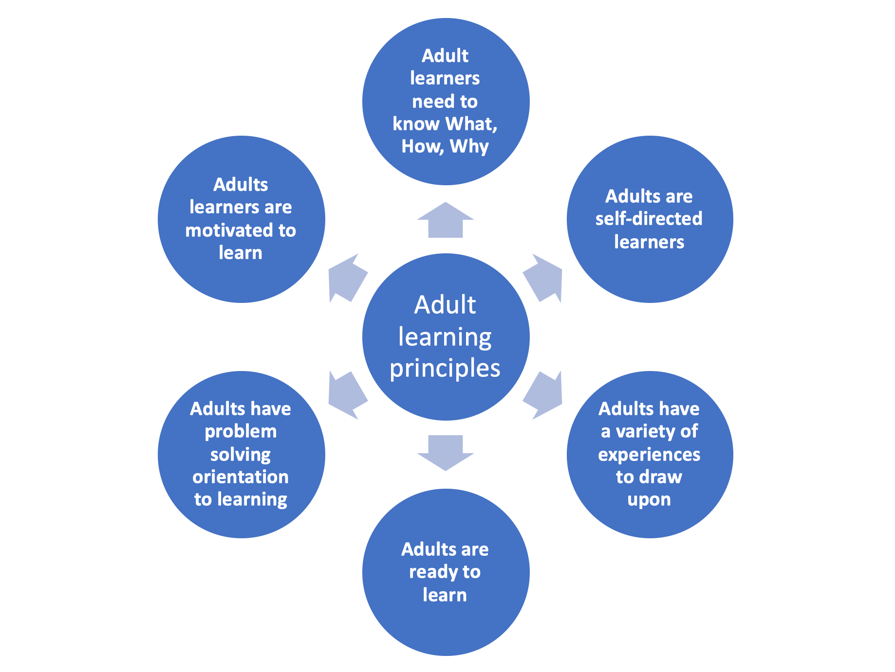

Strategies for training professionals
Learning theory - Pedagogy and Andragogy
What is Pedagogy?
Pedagogy refers to the art of learning and teaching, based on how we learn and how we accommodate this learning. It describes the theory of learning and teaching and the methods and activities of teaching.
While pedagogy was coined to refer to teaching and learning of children, andragogy is the term for adult learning theory. Even though this course deals with teaching of adults, pedagogy and andragogy will be used interchangeably, as the term pedagogy is often used as a synonym for teaching theories in general.
What is Andragogy?
Andragogy was proposed by M.S. Knowles in 1968. Knowles recognized that there are differences in the ways that adults learn as opposed to children. Many researchers agree that the self-directed approach to learning discussed by Knowles is applicable in a number of settings. Therefore, Knowles’ assumptions of andragogy should be considered when designing and facilitating training programs for adult learners as these assumptions aid adult learners in applying new knowledge and skills to their professional environments.
Knowles’ theory of andragogy identified five assumptions that teachers should make about adult learners.
Adults are self-directed learners, as they are more mature and have more secure self-concept, this allows them to take part in directing their own learning
Adults have a vast array of experiences to draw on as they learn
Adults are ready/interested to learn: adults have reached a point in which they see/accept the value of education and are ready to focus on learning
Adults are often looking for practical, problem-centered approaches to learning, that they can apply in their own contexts. Many adults return to continuing education for specific practical reasons, such as entering a new field.
Adults have strong internal motivation to learn
A later sixth assumption posits that Adults are relevancy-oriented. Adult learners need to understand why learning new knowledge or skills is important.
**What do you think about these principles of adult learning?
Do you have an example from your experience as a learner or trainer to illustrate your views?**
Application of adult learning principles in approaches to training/teaching
Learning and teaching is an active process where knowledge and authority is shared between teachers and learners. The teacher’s/trainer’s role becomes more one of a facilitator or a guide. Knowles summarised four key principles and practice considerations for adult learning:
Since adults are self-directed, they should have a say in the content and process of their learning.
Because adults have so much experience to draw from, their learning should focus on adding to what they have already learned in the past.
Since adults are looking for practical learning, content should focus on issues related to their work or personal life/career.
Additionally, learning should be centred on achieving higher cognitive levels beyond memorising content.
The assumptions of andragogy shape the design of training. According to Knowles et al. (2015), in the traditional context model the instructor decides in advance what knowledge or skills need to be transmitted, develops the content into logical units, selects the most appropriate delivery strategies (lectures, readings, laboratory exercises etc.), and then develops a delivery plan.
Following an andragogical approach, ideally, the instructor prepares in advance a set of procedures for involving the learners and other relevant parties in a process involving these elements:
preparing the learner;
establishing a climate conducive to learning;
creating a mechanism for mutual planning;
diagnosing the needs for learning;
formulating program objectives (content) that will satisfy these needs;
designing a range of learning experiences;
conducting these learning experiences with suitable techniques and materials;
evaluating the learning outcomes and diagnosing needs for improvement
Further reading:
Other educators have based their teaching practice on variations of these principles. Vandenberg outlines five basic principles and assumptions for adult learners and learner actions or conditions which ensures that learners really do learn: Facilitating Adult Learning.
Combining Knowles’ and Vandenberg’s assumptions, this Table outlines what trainers/facilitators could do for effective adult learning.
From teacher to facilitator of learning and trainer of professionals or experts
Traditional role of a teacher is that of being responsible for what learners should learn, how, when and if they have learned. They transmit prescribed content, controlling the way learners receive it and use it, and at the end test their knowledge. This is the model many of us know and have been through.
Facilitator of learning on the other hand, uses existing knowledge, experience and motivation of learners to shape the learning experience. From content transmitter, the role shifts to learning process management. While the content planning and transmission in traditional model requires primarily presentation skills, facilitator has to be able to perform the function of process designer and manager, and that requires relationship building, needs assessment, involvement of students in planning, linking students to resources, encouraging students’ initiative.
Training professionals apply adult learning principles bycreating and preparing the learning environment conducive to learning. They consider the characteristics of their target audience, main described by adult learning principles we talked about in the previous steps. They also constantly evaluate their teaching looking to make improvements.
Here we will present how the adult learning principles can be translated into more concrete teaching/training strategies, so that as trainers we can use methods and tools to better accommodate the learning process of our adult learners, as part of the facilitation process.

Scope of training and teaching
Most of what we taught in this module can be applied to different scopes and formats of teaching/training. The trainer’s or teacher’s knowledge, skills and attitudes we talked about are needed to apply an active, learner centred approach to teaching/training . However, we paid most attention to training of adult professionals that often takes place via short courses, workshops, seminars, on job training (or in-person, virtual or hybrid equivalents). You might be working or planning to work on a university course or even the programme consisting of more than one course. You will still be able to use the principles of learning and training described in this module and further in Module 2, in other contexts where your work might be situated.
Social learning
When designing training, we should always take into account the social context where learning takes place, as learning is an active, contextualized process of constructing knowledge, rather than pure acquisition of information.
Learning occurs through social interactions, and others in the community play important role in the process of learning.
This concept is based on social constructivism, a theory of how people learn. The theory positions social interactions, such as conversations between teacher and learner, as important in articulating what is already known so that new ideas can be introduced in the context of current understanding.
L Vygotksy, the founder of social constructivism, proposed the idea of a Zone of Proximal Development (ZPD) to explain how learners master new ideas and skills under guidance from an expert.
Building on this, E. Wenger showed that learning and value creation in networked Communities of Practice happen through engagement and social interaction of its members.
In the context of this course, social learning will be encouraged through opportunities for knowledge and experience sharing.
Find below some examples and definitions of ways social learning can take place.
Knowledge Sharing: Directly passing on ideas and information to each other
Direct learning from others: Asking questions, getting responses
Shared knowledge building: Development of concept through dialogue and interaction
Group learning: Orchestrated collaboration, exploration and creation
Conversational learning: Discussion, social interaction
Vicarious learning: Observation of other people’s learning
Implicit learning: Incidental learning